생성원리

정의 Definition
화성암은 용융상태의 마그마가 식어 고결된 암석으로 성인에 따라 크게 분출암과 관입압으로 구분됩니다. 심성암은 지각 내 비교적 깊은, 심부에서 천천히 식어 고결된 관입암으로 대부분 결정화된 완정질이며, 결정크기가 큰 조립질 조직이 특징입니다. 대표적인 심성암은 화강암, 거정질화강암, 섬장암, 몬조나이트, 섬록암, 반려암, 감람암, 회장암 등이 있습니다.
종류 Class
총 9종의 이미지가 있습니다.


- 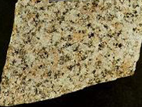
- 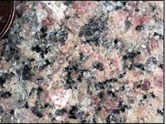
이름 (name)
화강암(granite)
특 성 (characteristics)
- 가) 개요
- SiO2를 많이 포함하는 규장질암으로 특히 칼리장석(정장석,미사장석), 석영, 운모를 주성분 광물로 하며 완정질이고 현정질인 등립질 암석이다. 유색광물이 10% 내외로 담색 또는 담회색이며 장석의 함량에 따라 담홍색을 보이기도 한다.
화강암은 주로 저반으로 나타나 넓은 면적으로 노출되며, 암주, 병반 등의 소규모 형태로 드물게 나타나기도 한다. 화강암내 유색광물 중 보다 많이 함유된 것에 따라 운모화강암, 각섬석화강암 등으로 화강암을 분류한다.
나) 광물구성
| 석영(quartz) | 10~40% |
| K-장석(potash-feldspar) | 30~60% |
| 사장석(plagioclase) | 0~35% |
| 유색광물[흑운모(biotite), 각섬석(hornblend)] | 10~35% |
다) 산출지 : __, 경북 영덕, __(사진좌측부터)
- 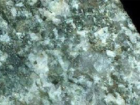
- 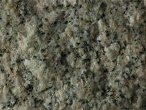
이름 (name)
화강섬록암(granodiorite)
특 성 (characteristics)
가) 개요
화강암과 유사한 관입 화성암으로, 우리나라에서 보통 화강암이라 말하는 대부분이 화강섬록암에 속한다. 완정질, 현정질, 등립질인 관입 화성암이라는 점은 화강암과 같은 특징이다. 하지만 화강섬록암은 사장석(plagioclase)이 K-장석보다 많이 포함되어 있으며, 유색광물인 흑운모(biotite)와 각섬석(hornblend)이 화강암에 비해 많이 포함되어, 보다 어두운 색을 띤다는 점에서 화강암과 구분된다.
나) 광물구성
| K-장석(potash-feldspar) | 20~40% |
| 사장석(plagioclase) | 25~45% |
| 석영(quartz) | 35~10% |
| 유색광물[흑운모(biotite), 각섬(hornblend)] | 30~10% |
- 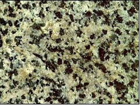
- 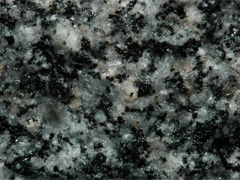
이름 (name)
섬록암(diorite)
특 성 (characteristics)
- 가) 개요
- 회흑색, 회녹색, 회청색 등 회색 계통의 중성질 심성암으로, 사장석(plagioclase)과 각섬석(hornblend)이 주구성광물이며 간혹 흑운모(biotite)와 휘석(pyroxene)이 포함된다. 사장석 중 대부분은 안데신(andesine)이며, 석영(quartz)과 정장석(orthoclase)은 드물다. 섬록암은 섭입대 상부의 염기성·고철질(mafic) 암석이 부분용융(patial meltking)에 의해 생성된 마그마와 접촉하여 생성되기도 하며, 화강암체의 주변부가 급속히 냉각되어 만들어 지기도 한다.
나) 광물구성
| 사장석(andesine) | 55~70% |
| 유색광물[각섬석(hornblend) or 흑운모(biotite)] | 40~25% |
| 소량광물[휘석(pyroxene), 석영(quartz) 등] | 5~10% |
다) 산출지 : 전북 장수, 한국, 한국(사진좌측부터)
이름 (name)
페그마타이트(pegmatite)
특 성 (characteristics)
- 가) 개요
- 마그마가 냉각되는 도중 일부 유동성이 큰 마그마가 이미 고결된 암석이나 그 주위를 뚫고 들어가 대단히 큰 결정으로 된 암석을 말한다. 이 중 석영과 장석을 주성분으로 하고 유색광물의 양이 상대적으로 적어 화강암과 유사한 성분을 지닌 페크마타이트를 거정질 화강암이라 한다. 페그마타이트 중에는 간혹 특수한 광물들을 포함하고 있어 그 광물의 광상을 이루는 경우가 있다.
- 나) 광물구성
- 페그마타이트는 생성당시 마그마의 성분에 따라 화강암질, 섬록암질, 반려암질, 섬장암질 페그마타이트 등으로 나뉘는데, 광물구성도 이러한 생성당시의 마그마 성분에 의해 결정된다.
다) 산출지 : __, 미국, 미국(사진좌측부터)
- 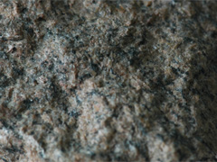
이름 (name)
섬장암(syenite)
특 성 (characteristics)
- 가) 개요
- 적색, 담회색의 완정질이며 현정질의 조립·등립질 암석으로 주성분광물은 칼리장석과 각섬석이다. 유색광물인 흑운모가 많으면 흑운모섬장암, 투휘석이 많으면 투휘석섬장암이라 하고 교대작용으로 다른 암석이 변질되어 생성되는 경우도 있다. 우리나라에는 산출이 희소하나 강원도 양양부근에 작은 산출지가 있다.
나) 광물구성
| K-장석(potash-feldspar) | 30~80% |
| 사장석(plagioclase) | 5~25% |
| 유색광물(흑운모, 각섬석, 휘석) | 40~10% |
다) 산출지 : __, 미국(사진좌측부터)
- 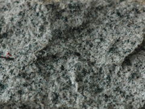
- 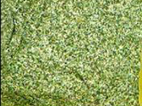
이름 (name)
몬조나이트(monzonite)
특 성 (characteristics)
- 가) 개요
- 정장석(orthoclase)과 사장석(plagioclase)의 함량이 비슷한 암석으로 완정질이며 등립질의 심성암이다. 주로 회백색을 띠고, 육안으로는 섬록암(diorite)과 구별이 어렵다.
나) 광물구성
| 유색광물(흑운모, 각섬석, 휘석) | 15~60%, 평균30% |
| 사장석(plagioclase) | 50~30% |
| K-장석(potash-feldspar) | 45~20% |
다) 산출지 : __, 미국, __(사진좌측부터)
- 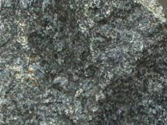
- 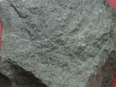
이름 (name)
반려암(gabbro)
특 성 (characteristics)
- 가) 개요
- 조립질 또는 세립질의 완정질이고 등립질인 심성암으로, 주구성광물은 Ca-사장석과 휘석이 각 50% 정도이다. 녹흑색, 암흑색의 유색광물(휘석, 감람석 등)에 담회색의 사장석이 섞여있으며, 대양지각의 하부를 구성하는 암석이다.
나) 광물구성
| 유색광물[휘석(pyroxene), 감람석(olivine) 등] | 25~50% |
| 사장석(plagioclase) | 70~45% |
다) 산출지 :
- 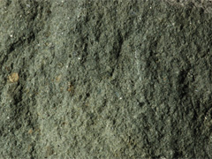
이름 (name)
감람암(peridotite)
특 성 (characteristics)
- 가) 개요
- 암록색, 흑록색의 짙은 색을 가진 완정질의 조립질 암석으로 주로 암맥, 암상의 형태로 산출된다. 주구성광물은 감람석(olivine)이며 각섬석과 휘석을 동반하다. 감람암 중 감람석이 대부분인 것을 더나이트(dunite)라 하고 이 밖에 유색광물의 함량에 따라 각섬석감람암, 휘석감람암 등으로 구별된다. 감람암은 마그마 분화과정에서 가라앉은 무거운 광물들로 구성된 초고철질암이며 맨틀을 구성하는 암석이다.
나) 광물구성
| 유색광물(감람석, 휘석, 각섬석) | 85~95% |
| 그 외 광석광물(자철석, 티탄철석, 크롬철석) | 10~3% |
| 사장석(plagioclase) | < 5% |
다) 산출지 : 미국
- 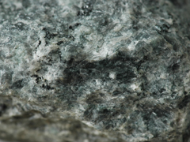
- 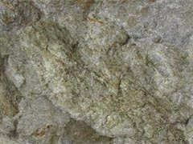
이름 (name)
회장암(anorthosite)
특 성 (characteristics)
- 가) 개요
- Ca-사장석(plagioclase)이 90~100%로 거의 대부분을 함유한 반려암체의 한 종류로 암상이나 선캄브리아대의 거대한 저반으로 산출된다. 휘석(pyroxene), 감람석(olivine)과 같은 고철질의 광물 함유량은 적으며 캐나다, 미국, 스칸디나비아반도 등의 순상지에서 발견된다.
나) 광물구성
| Ca-사장석(Ca-plagioclase) | 90~100% |
| 유색광물[휘석(pyroxene), 감람석(olivine) 등] | 10~0% |
다) 산출지 : 미국, 미국, __(사진좌측부터)